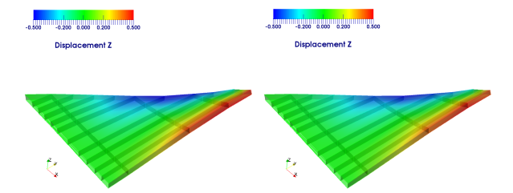

← Publications Conference paper 2015
Robust Optimization of a Wing Under Structural and Material Uncertainties
17th AIAA Non-Deterministic Approaches Conference, Kissimmee, Florida, Jan 2015
This paper demonstrates structural sizing optimizations of a fighter wing configuration in the presence of uncertainties in structural parameters and material properties. The design variables and input parameters are considered to have uncertainties and are treated as aleatory and epistemic random variables in the optimization process. The aleatory uncertainties are quantified and propagated via inexpensive sampling of kriging surrogate models, whereas the epistemic uncertainties are propagated using a box-constrained optimization approach. The considered loading condition arises from trimmed flight at a 220 degree roll maneuver. The resulting designs are shown to be robust against input anomalies to desired probabilistic levels.
Figure: A surrogate-model based robust optimization on a model representative of a figher jet in 220 degrees per second roll maneuver at a speed of mach 0.7. The geometrical parameters of the spars, spar caps, ribs, skins and, connection rods are subject to design sizing optimization methodology. The produced deterministic design is shown on the left and the robust design is shown on the right. The robust wing undergoes lesser deformations under operational loading.